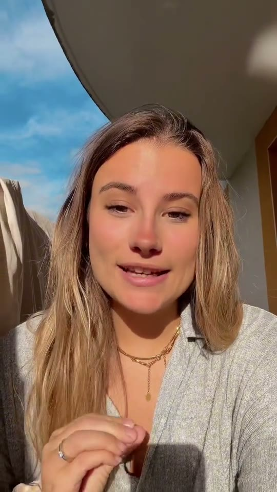

Programme créateurs
Photos prend
toute la place ?
3€ par vidéo validée+5€ à 10K vues1000€ à 1M vues
Tu filmes ton stockage, tu ouvres Tasnif, tu montres les vidéos ou captures qui prennent le plus de place. Simple, visuel, facile à refaire.


C'est quoi Tasnif ?
Tasnif montre les vidéos, captures et photos lourdes qui remplissent ton iPhone. Tu sais enfin par quoi commencer avant de supprimer au hasard.
Hook simple
J'ai trouvé ce qui me prend toute la place.
Rémunération
3€par vidéo acceptée et publiée
+5€dès 10K vues en 7 jours
1000€si la vidéo atteint 1M vues
Comment filmer
1Montre ton stockage
“Je n'ai plus de place” ou “Photos me prend trop de Go”.
2Ouvre Tasnif
Montre directement les plus grosses vidéos ou captures.
3Garde un chiffre
Un “cette vidéo fait 4 Go” suffit. Pas besoin d'expliquer l'app.
4Poste la vidéo
TikTok, Reels ou Shorts, puis envoie-nous le lien.
Formats à reprendre
Les meilleurs formats ressemblent à une story qu'on envoie à une copine : rapide, clair, avec un vrai chiffre en Go.
Tu veux tester ?
Postule avec un lien TikTok, Reels ou Shorts. On t'envoie les formats à refaire et les règles du pilote.
Postuler au programme